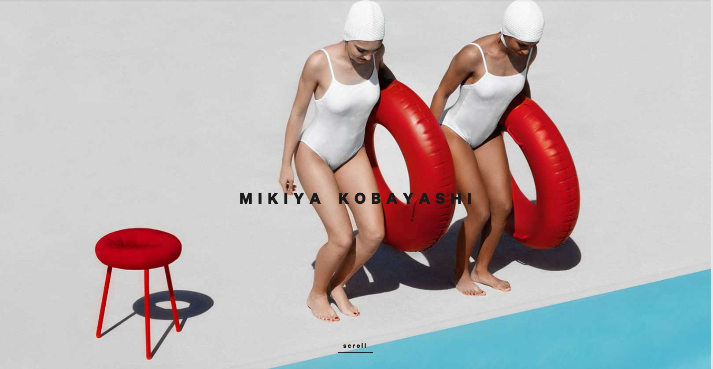

mikiya kobayashi
Mikiya Kobayashi’s website has a very clean design where it displays all the different design and artwork done by the artist. Unfortunately the index page becomes quite stuffed with images because there is no gutter or margin in between them.
Halfway through scrolling down the page, the pictures change sizes but are still stuffed together which in my personal opinion makes it worst to find a specific project of his.
clear linear swipe, the names of the pictures pop up only when the curser is placed on it therefore it is more difficult if you are looking for something specific on the site.
Although the design of the website is very clean and beautiful, it makes it difficult to search for specific information. The initial page of the site is a slideshow of the artists work and to enter the index page you have to simply scroll any direction and you enter the site.